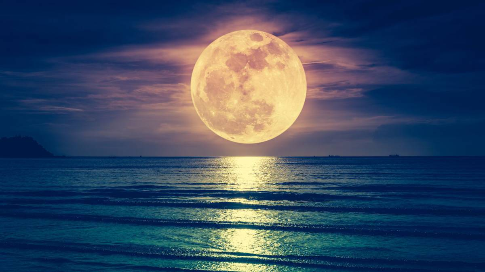

Luna

La Luna es el único satélite natural de la Tierra. Con un diámetro ecuatorial de 3476 km, es el quinto satélite más grande del sistema solar, mientras que en cuanto al tamaño proporcional respecto a su planeta es el satélite más grande: un cuarto del diámetro de la Tierra y 1/81 de su masa.